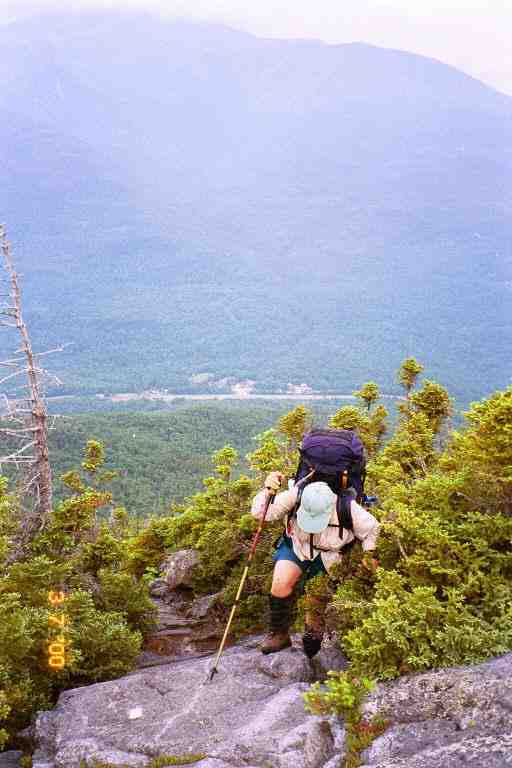
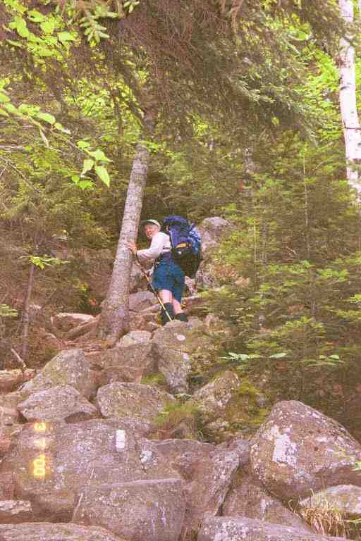
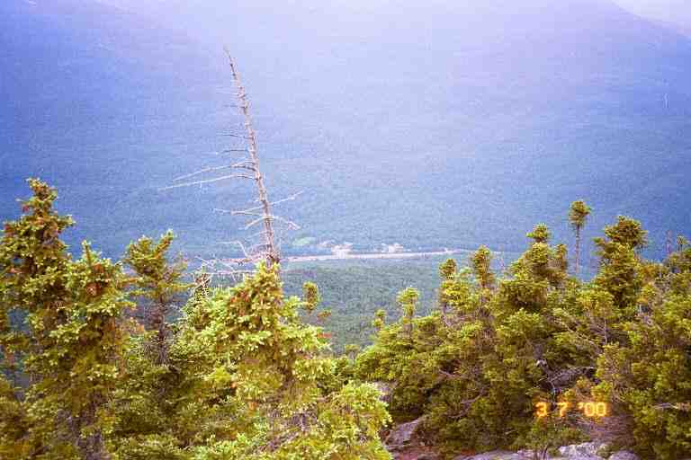
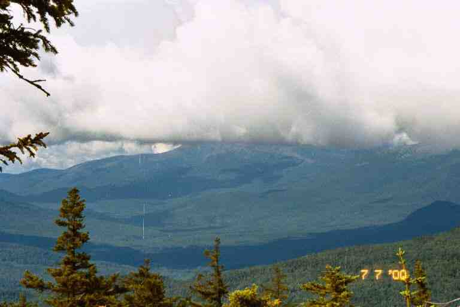
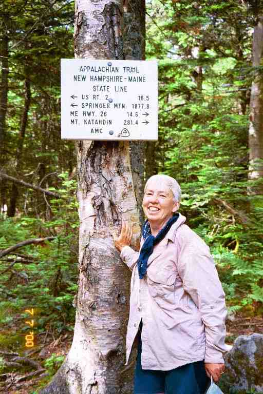

On Monday morning July 3, at 8 a.m., we pulled our stuff out of BLUET's Explorer at the Pinkham Notch Visitor Center parking lot and crossed the highway to get back on the trail, MA with her new Leki hiking poles and rejuvenated knee, and I with my new hip bottle and new Platypus water bag. BLUET was not working on Wednesday and said she would come and meet us as we came out of the woods at US 2 that afternoon. This would give us a manageable 21.1 miles to do over the next 3 days.
The trail was level and rocky as we crossed a bridge over a brook and followed it for the first mile back on the trail. Over the next 1.5 miles we climbed the 2000 feet up Peak E of Wildcat Mountain in two steep bumps. I have attached two pictures of MA going up this mountain. In the first one, we can see the road through Pinkham Notch and a white painted blaze on a rock in front of her. In the second, we get a good example of the kind of steep climb we had in the Whites, and this time we see a blaze on the rocks below her. As you can imagine, we took a number of breaks as we climbed in this terrain for a couple of hours. We were passed by a few young couples, who were much faster than us. Of course they were only carrying light day packs.


Once on top, the trail levelled off for the next 0.5 miles to Peak D. We met a little boy who was likely about 3 years old. He told us he had walked up here. He was with his parents and grandparents. It turns out that they had come up on the ski gondola on Peak D. It had taken us 4.5 hours to do the 3 miles up to the gondola. The trail went right behind the old wooden complex for the original lift which was adjacent to the new lift. We climbed to the sticky tarred observation roof on the old building where we had our bagel and peanut butter lunch. The overcast weather did not make for a great view.

We met a few tourists, and a section hiker named Jens who had a strong Swedish accent. He said he was a teacher and hiked a lot in the summer. One of the tourist couples was very talkative. The lady was interested in hearing about hiking but was obviously out of shape. The man was thin and had a greasy nineteen fifties look about him. When they left the roof, I saw the man leave his empty Evian bottle next to the building. I guess it was because no garbage cans were available as everyone was expected to bring their trash off the mountain. We always carried our garbage, but I guess he could not take his back down on the gondola. I have always regretted not saying anything to him.
There was a sharp rocky dip off Peak D and then a long climb up Peak C leading to the little bumps that were Peaks B and A. One of the pleasant things about this day's hike and climb was the fact that we were not above tree line and had the smell of an evergreen forest around us. The trees also helped in climbing and descending the steeper sections. It began to sprinkle as we completed this section and continued to rain as we started the steep descent down to Carter Notch.
It was a long 0.9 miles from Peak A to our destination, Carter Notch Hut. It took us quite a while to do the first part of the descent. If the rocks had not been so wet and slippery, this part would have been very easy. It was a steep rocky section with small rocks, allowing for small steps, and lots of trees to hang onto. The trail then became a narrow path cut into the side of the hill. Along this path we came into the open on the side of the hill at the site of a rock fall. We proceed nervously over this steep unstable area where the earth had given way in the last year or two.
We continued for some time along this path going in and out of the woods, as it hugged the side of the steep hill, and finally came to Carter Notch. Where the Nineteen Mile Brook trail branched off, we found a spot that had obviously been used on many occasions for tenting. A short distance ahead, the AT made a sharp left to climb Carter Dome, but we continued on for 0.1 miles to Carter Notch Hut, contouring one of two small nearby lakes. We completed our 4.9 mile day at 4 p.m. It should be noted that this notch is located at an elevation of 3300 feet.
The main building consists of a large dining room and kitchen with croo quarters in back. This hut is a self service hut. The $20 per person fee will get you a bunk in one of the two bunk houses just past the main building and allow use of the kitchen and all the cooking gear. There is a sign-in sheet to reserve cooking times but it was not needed as there were only a few people here. We decided to pay rather than work-to-stay, partly because we did not want to hang around doing chores in the morning.
Each bunkhouse had a porch along the front with doors leading into each of the 4 or 5 bunk rooms. The bunk rooms were bare except for the 6 bunks and were not heated. We grabbed bunks in an empty room, changed into dry clothes and used the toilet facilities which were in a separate nearby building. They were Clivus composting toilets which used solar power and a small battery to keep the contents at a certain temperature to aid in the decomposition. We then brought our food bags down to the main building where we cooked a two course meal consisting of two packages each of ramen soup and Lipton rice. After dishes, MA and I played cards and sipped on tea that the young croo member and her friend offered us.
We spoke a little with the few hikers here. We listened to the stories of two NOBO thru hikers who appeared to be in their mid fifties. We were surprised when we overheard that they had been at Lake of the Clouds Hut the previous night. They said that they had come down the Tuckerman Ravine trail from the hut to Pinkham Notch, and had then climbed up here. It was a pretty good day's walk. However the Tuckerman's Ravine trail is a 4 mile bad weather trail which avoids Mount Washington and the 15 tough mile ridge walk that we had done to Mount Madison and over Osgoode Ridge. In other words they had skipped part of the AT. We turned in early after hanging our food bags from the rafters above the dining room tables.
Before describing the events of the next day's hike to Imp shelter, I would like to quote JILEBI's journal for the same section of trail. In addition to showing the difficulty of that section, I think it vividly describes the pleasures of being in the woods.
**********
JILEBI: *** " Up we went from the hut - steeply of course 1500 feet to the Carter series of mountains. I, cultivating an attitude change so the hike went really well. It helped that there was always a spot to place a foot on to hoist up. The woods were still today - the spruce and fir trees, the carpet of lush spongy sphagnum mosses with bunchberries embedded in it along with the blue Clintonia Lily fruit and mountain wood sorrel. Today we saw a dark brown mink sitting on a branch craning it's neck curiously at us. It was very adorable. It's bright eyes looked at us for a long time before it got the courage to jump to another branch, and climb down and run off (scolding us a bit) through the bright green hummocky sphagnum moss. When we came to the edge of this rather delightful ridgewalk on North Carter Dome, two falcons circled above us. Across the valley we could see Mt. Washington and the rest of the Presidentials covered in a blue haze. I choked going down North Carter. It felt like we were coming straight down a cliff. Tree roots, old snags, tree trunks were my saviors together with Len's hand. I'm afraid my backpack is going to have no bottom after I'm done, because when all else fails I sit and scoot down. We eventually made it I suppose." ***
******************
MA and I left Carter Notch shelter by 7:30 and immediately began a climb up Carter Dome that was very reminiscent of the previous day's climb up Wildcat. As we climbed, we stopped as we came into the open and looked far below to Carter Hut and the two small lakes. We went up 1500 feet in a distance of 1 mile. The day was characterized by lots of ups and down along the top of the Carters.
We met Jens again that morning and he said he had camped in the spot we had seen not far from Carter Hut. We also came across a number of people heading south including a group of young SOBO thru hikers who were obviously from the south. One of them, named MOON DANCER, recognized us as MA and PA. She was a friend of DIRTY BIRD and BLUEGRASS and had seen us at Trail Days in May. They asked about camping up ahead and we told them about the spot near the hut. They were all worried about MOON DANCER's dog, who had refused to get up that morning, but had finally been convinced to get moving. I really have problems with bringing a dog on a thru hike. Some of them enjoy it, but they can't tell you how they are feeling and they can't say when they would like a day off. In addition, they often get injuries to their paws and pads.
MA and I had problems in the same area as JILEBI, coming off North Carter Mountain. My notes call this section dangerous. We would slide down a sloping rock, hanging on to roots and small trees trying to slow our descent because there would be a sharp drop at the end of the rock. There were also a number long descents that were so steep and narrow that we had to go down facing the hill, hanging on to anything we could.
It was strenuous and tiring both physically and mentally. We had to concentrate as we went down, trying to stay safe. At one point, there was a sheer drop of about 6 feet. I went down facing the rock and located a little 2 inch ledge to place my boots and then lowered myself the rest of the way; all in all not too difficult. MA attempted it in the same manner but when she got both feet on the little ledge, she could not move. When she tried to lower her foot down to the ground below her, the weight of her pack threatened to topple her backwards. She was holding on to the top of the rock and did not have the strength to pull herself back up. I reached up and undid her pack and removed it. She was then able to come the rest of the way down.
As we were coming down, we could hear rock music far below us. Eventually we reached a crew working with shovels, crowbars and other tools. They were repositioning large rocks, trying to make the climb a little easier. The leader gave us the bad news that we still had more than a mile to Imp Campsite, our destination for the night.
We reached Imp at 4 p.m., completing 7.9 miles. We walked down the short side trail to the site, going past the tent platforms and the steep stairs leading up to the caretakers tent, and stopped at the shelter. This shelter was partially enclosed. Five or six steps lead up to a large doorway at the front, and a narrow ledge ran along the front of the shelter at the top of the stairs. We went up the stairs of the empty shelter and grabbed a couple of spots on the floor. The number of sleeping spots was doubled by the sleeping shelf about 4 feet above the floor.
We sat on the ledge out front and relaxed, reading the register. We were joined by the young talkative female caretaker who came to collect our $12. The water source was just beyond the shelter in a small pool at the base of rocky slope that the water slid down. I filtered for our needs and we prepared supper.
Two young girls arrived, not in a very good mood and asked for directions to the water. They returned sometime later in a better mood. It seems they had been out of water. They were SOBO thru hikers named CHEVY and BUMPY. They sat on the front ledge with us and chatted about their trip so far, and said that quite a few thru hikers had been in Gorham and would perhaps be here for the night. Their enthusiasm reminded me of the many young people we had met at the start of our adventure in 1999. It rained a little so we moved inside and they cooked in the shelter which made me nervous as their stove seemed a little out of control, with a large flame and flare-ups.
The shelter was located on the side of a mountain but we could not see because of the trees in front. A short trail lead to a clear spot with a bench where we could look out into the distance. This spot would give us a good view of the Fourth of July Fireworks in Gorham later that night. We were joined by a young SOBO thru hiker that the girls knew. His name was STARLING or STAR MURDER, and he was likely no more than 17 years old. He was really enjoying his trip and could not stop talking. He talked about his future plans, his family, his trip, etc., etc. He was really excited about the food mail drop he received in Gorham from his family. We lay in our sleeping bags on our side of the shelter, watching him slowly empty his food bag, and talk about every item as he removed it. I don't think I have ever seen someone so excited about items of packaged food. He was especially pleased about a can of mandarin oranges that his sister had put in the package. He said he did not want to carry cans but that he would make an exception for oranges.
MA and I were tired so we did not get up to see the fireworks, in fact I dozed through it. We do recall two other young SOBO thru hikers arriving after dark and the five of them yacking away into the night as we dozed on and off. It was actually very nice to be surrounded by thru hikers again. I also recall a thunderstorm sometime during the night.
The next morning we were on our way by 7:40. The trail after Imp was mostly a rocky path with a few bumps but was not too hard to handle, including a rather steep climb up Mount Moriah. When we started down Moriah, we met a man coming the other way who said that section of trail was very difficult. He said he had done many sections of the AT in the south but nothing was as bad as what he had just climbed. We thanked him for the information and told him about our previous day's problems on Carter, which he would have to climb later that day.
For the rest of the way down the mountain, we kept waiting for the tough sections he described, but they did not materialize. It was a rocky trail and was very steep in spots, requiring us to be careful, but the steep sections comprised mostly smaller rocks, which made it more like walking down stairs. If he thought this was tough, he was really going to enjoy Carter North. We met two women and a man who were day hiking up the mountain. We talked a while and the man told us that he was going to be thru hiking the trail the following year.
Near the bottom, we met a couple of SOBO thru hikers who told us they were in the middle of a large group and that there had been lots of SOBO's in Gorham. They were having a great time. We then met FROG another young SOBO thru hiker who told us we had reached the bottom of the mountain and that the trail would now level off. He was in a really great mood and told us he was having the best time of his life. We told them what to expect in the Whites and about the huts.
FROG had been right, the trail levelled off and we found ourselves following along a river on an ever widening path. Around 12:30, we came into a wide clearing where we discovered BLUET sitting on the edge of Rattle River shelter with a young SOBO thru hiking couple named CANDY MAN and LITTLE DEBBIE. We were pleased to have done the 6 miles in less than 5 hours. BLUET had treats for us. We sat and chatted for a while and soon a few more SOBO's arrived including one who seemed extremely overweight. Like all the rest, he was in great humour, and had hiked the 300 miles here from Mount Katahdin.
We had 2 miles to go to the road and I decided to press on the gas and walk on ahead, leaving MA and BLUET behind. The trail was a wide dirt path through the woods and was easy. I met a few families and young people with towels around their necks headed to the swimming spot near the shelter. I also met two more SOBO's. We certainly were in the middle of the southbound pack. I guess if we had started a week later, we would not have got work-to-stay at the huts. At the road, we had pop and juice from the cooler BLUET had brought. It was 2 p.m. and we had done 8 miles.
The rest of the day we did chores, showered and made a few calls. We called our daughter Tasha, and then called the Pine Ellis bed and breakfast in Andover Maine where one of our mail drops was waiting for us and where we hoped to stay one night. I asked Ilene which of the two access roads would be best for catching a ride into town, East B Hill Rd which was 41 miles from here or South Arm Rd which was 51 miles away. She said that there was not much traffic on those roads but that she and her husband often drove up to pick up hikers. She thought we would likely have more luck on the first one. Based on our slow progress, we estimated that we would be there on the sixth day. She said she would go and check for us at the trailhead during the day and again just before dark.
We treated BLUET to supper in Gorham and purchased more groceries to ensure we had enough to last the 6 days to Andover. We slept in the bunks in BLUET's room that night and the next morning we had the All You Can Eat (AYCE) breakfast with her at the Pinkham Notch Visitor Center. We met some people who recognized us from the huts in the Presidentials and asked how we had made out.
BLUET drove us back to the trail head at 9:15. We walked a short distance along US2, took a road that crossed the Androscoggin River (elevation about 450 feet), then followed a dirt road into the woods and eventually veered off onto a path after nearly a mile of road walk. The first challenge was climbing 2500 feet to the top of Mount Hayes, over a distance of 3 miles. It was mostly easy walking with lots of switchbacks and a gentle slope on a narrow path in the woods.
A young NOBO hiker came rushing up the trail and caught up to us. She was 1999 thru hiker named PIXIE who had got off the trail last year in Gorham with Lyme disease. This was her first day back on the trail to finish last year's hike. We had not met her last year, but we sat and chatted for some time about our 1999 adventures and the people we knew.
We later met a SOBO loner named SPIDER. He was thru hiking but had not had much contact with the other hikers around him. He seemed to be one of those whose hike was motivated by a desire to get away from everything and live in the woods. The unofficial trail motto in 1999 was likely "Hike your own Hike", which meant never criticize anyone's motive, speed, or method of hiking. We stopped for lunch on a flat rock near the top of Mount Hayes and met a young section hiking couple (MAC and CHEESE) heading south.
After walking over the flat rocks on the top of Mount Hayes, we dropped down about 600 feet and then climbed Mount Cascade, another easy climb. This portion of the AT all the way to Grafton Notch is called the Mahoosuc Trail as it goes along the top of the Mahoosuc Range. During the day we got a number of great views of the river valley below and some of the built up areas around Gorham (or was it Berlin - not sure). The walk along the top of Cascade mountain was a series of ups and downs and then we hit a steep down, on a rocky trail in light woods with long grasses along the edge of the trail. Near the bottom of the steep descent we came to a side trail leading to our destination Trident Col Tentsite.
There was little bit of a climb over rocks to the tentsite, and then it was a cleared path leading to the four tent spots. It was 3:15 and we had done 6.9 miles in 6 hours. Because we were so early, we were the first ones here and we grabbed the second site which was situated right next to the path. The water source was a bit of a hike down a hill past the first site. We rested in our tent for awhile before starting supper. Two women in their late forties went by heading for one of the other sites.
While we made supper, we could see and hear them putting up their tent through the trees behind our site. We later scouted out the area and met them. I believe they were from Pennsylvania and one of them spoke with a noticeable Dutch or German accent. They started camping as girl guide leaders when their girls were young. They now go backpacking together for a week or so every year. Their husbands are not into backpacking and in fact would not be welcome to join them. This was their special time together and they enjoyed it. They were called the TEA LADIES because they carried an assortment of teas with them.
They said they were not in a hurry and did very little mileage. They told us of their experience going though Mahoosuc Notch and we listened intently because we would soon have to go through this Notch which is known as the most difficult mile on the trail. They told us that they had come through Mahoosuc Notch in the rain a few days ago. They had considerable difficulty going over some of the large wet boulders and had removed their packs a number of times, and in a few instances had to use ropes to hoist their packs up. This conversation certainly did not alleviate any worries we had.
A young couple arrived later and set up in the first spot. They seemed to go immediately into their tent and we never saw them. I walked quietly by their tent on my way down to the water source to get water for the next day's hike. We turned in early with the idea of getting up early to do 10 miles to Carlo Col Shelter. This would then allow us to have a short 4.4 mile day the following day, in order to rest for our assault on Mahoosuc Notch the day after that.
We were back on the trail just after 7 a.m. the next morning. We first completed the previous day's descent. We were walking through mixed hardwood forests which was a nice contrast to the Whites and its conifers and alpine zones. On the way down we heard a strange noise, but could not figure what it was or where it came from. The noise continued as we proceeded on and finally I noticed a mother raccoon chasing a youngster up a large tree far above the forest floor to the right of the trail. The young raccoon was screaming at the top of its lungs as it climbed.
We then had a gradual climb up to Wocket Ledge. There were great views of the terrain we had just covered both on the way up and at the ledge itself. The trail then levelled off over the next few miles, with the exception of a few little bumps. During this early part of the day, we met quite a few SOBO's including a young Canadian couple called LEAP and FROG, who were from Calgary and Thunder Bay. The trail then descended about 700 feet and flattened out for the last 0.5 mile. A day hiker sped passed us during this section. That morning, the trail skirted Dream Lake and a few beautiful ponds. Moss Pond was particularly memorable with thousands of Water Lilies over its surface.
Around 11 a.m., we crossed a small stream but did not filter water as there was some at Gentian Pond Shelter where we would soon be arriving. Within a few minutes, we spotted Gentian Pond a short distance below the trail to our right, and we then arrived at the shelter. We had done 5 miles and felt pretty good. It seemed that the shelter's water source was likely the stream we had crossed or the pond. We did not bother getting any as we felt we had a sufficient amount.
We sat and relaxed at the shelter for a long time, reading the register and chatting with the day hiker. He had a radio tuned to the weather and said there were thunderstorms in the area and was concerned with climbing Mount Success. We checked the map which showed a small climb and descent and then a small ascent before a steep climb to the top of Mount Success, followed by a few ups and downs as the trail descended to the shelter. Based on the map, it appeared that there would be a little work but it did not seem like we would have too difficult an afternoon.
It was a long climb up Mount Success, but it was mostly all on a path in lush woods and we felt good for our effort. We leap frogged the day hiker who was faster than us but was stopping for long periods when his location allowed him to get a good reception of the weather station. He kept us informed of the weather. The top of the mountain was mostly flat with many swampy areas. From here we got a view back to the Whites and Mount Washington with its summit hidden in clouds. The day was partially overcast so we did not get the 100 mile view that others have claimed. By this time we were getting low on water but it was only 2.4 miles to the shelter.

The trail changed just past Mount Success and we found ourselves in an area of big rock slabs and large boulders. We eventually crossed the last state line and entered Maine (only 281 miles to go). We had heard that western Maine was very difficult and this territory was likely a good introduction. The 0.5 miles from the state line to the shelter trail was up a rocky wooded path before a little dip which brought us to a tricky spot.

We were at the edge of "van sized" boulders (JILEBI quote) with a drop of about 10 feet to a narrow ravine below. Reaching up in front of the boulders were a few slim tall boulders with no visible means of using them to get down from our position. About 50 feet away, on the other side of the ravine, we spotted two hikers. I asked if this was the direction of the trail and they said it was.
MA and I stood there studying this impossible situation before deciding to take action. We first threw our hiking poles down out of the way and MA removed her pack. She slid feet first over the rim reaching down with her feet for a spot to place them. She tried pressing backwards against one of the adjacent boulders so that she would not go down too fast. I held onto her as she descended. She made it down successfully without incident and I lowered her pack to her. It was now my turn. I decided to keep my pack on and to go down slowly by wedging myself between two of the tall adjacent boulders. I reached blindly down with one foot and found a spot to rest it far below. I was then was able to lower myself to the ground and I then squeezed between the boulders to join MA.
The two young men were standing next to the sign for the Carlo Col trail which lead passed the similarly named shelter. They were heading south and were debating whether to cross over Mount Success to Gentian Pond shelter. The skies looked threatening and they said the weather forecast called for thunder showers. They did not want to get stuck on the mountain during a storm but found it too soon to stop at this shelter. We described the terrain to them and left them to their decision. They did not show up at the shelter, so they must have gone on.
It was a difficult 0.3 miles down a grassy path through light woods to the shelter. The slope was rather easy but the path was covered with rocks of all sizes, a danger for twisting an ankle. The trail crossed a stream and the shelter was in a flat clearing just above it, on the other side of a stand of trees. We were alone at the shelter when we arrived after nearly 10 hours on the trail. We changed into warm dry clothes and hung our damp clothes on nails out front. It felt great to have the dry polypro long johns against my skin. I also put on a fleece as it was getting cool. I hung the tent fly on the side wall of the shelter. It was still wet from the sprinkling we had the night before and the wind would help dry it. The skies continued to look threatening but the wind was blowing the dark clouds away. However, it remained overcast.
We were joined by three university students from Michigan who were out here for a week or so. They arrived very tired and out of water. It seems they were trying to stick to some kind of itinerary and had done 10 miles south bound. They had not realized how difficult Mahoosuc Notch would be and it had exhausted them. However they were excited about what they had accomplished and said that the Notch had been fun. We would be taking two days to do what they had done this day.
We had chosen spots on the upper ledge and they took places on the main floor. They emptied their packs and got changed. They were exuberant and having a great adventure. I think one of them had done a little of this before but the other two were new at it. I was surprised to see one of them use underarm deodorant when he changed into dry clothes, and was even more surprised when he used it again the next morning. I think he was the one with a little experience.
I sat on a log cooking our standard two course meal and they were interested in what we ate. One of them said that they ate really well on the trail. One of them had a can of wieners before supper. They cooked a few things for their meal, including some canned items, but I got the distinct impression that their hunger was not satisfied.
It was cold that night and MA and I slept well, all bundled up in our bags. We were not in a hurry to get up the next day since we only had 4.4 miles planned to Full Goose shelter. We completed our morning chores and were on our way by 8:45 a.m. We hiked back to the AT and hiked through the woods up Mt Carlo. From there we could see the next mountain, Goose Eye Mountain, about a mile away across a depression. The terrain on the slopes in this entire area was characterized by large slabs of rocks with low vegetation and small bushes, but very few trees. There were a number of boggy areas in the valleys between the peaks.
We hiked down into the valley and then into a deeper ravine. The trail started climbing from one rock slab to another, bringing us slowly higher and higher and finally we followed the blazes into a corner where we had to hoist ourselves up onto a ledge about 6 feet up the side of the hill. I was first and I placed my feet into notches and on rocks as I used my arms to hoist myself up. My pack made the task a little difficult, both because of its weight and because it wanted to pull me backwards. Once on the ledge, I leaned down to help MA as she attempted to get up, but there was no need, as a day hiker appeared behind her and in a gentlemanly manner, placed his shoulder in a strategic position and helped her up.
We continued to the top of the mountain with a little rock scrambling up the last steep section. As we came towards the top we found it very windy. At the top, the trail made a 90 degree right turn and headed along the ridge to the East Peak. Another trail went off along the ridge to the left towards the West Peak. We walked about 0.5 miles along the top with a rise at the end at the East Peak and then commenced a descent. There had been a few trees and bushes along the ridge and we started down through a series of switchbacks in an area of bushes. The switchbacks seemed to be part of a recent trail relocation and the footing was tricky with loose rocks and earth underfoot. We came out into the open and the terrain reminded me of rocky dry areas out west that I had seen in films. There was low vegetation around us as we followed the white blazes down from one sloping rock slab to the next. Once in a while there would be a steep drop that we would have to negotiate our way down, and a few times we threw our poles below us as we slid down rocks.
As usual in these areas, there were a few boggy areas between the peaks. As we crossed the valley towards the North Peak of Goose Eye mountain, we noticed a few people and a couple of dogs way ahead working their way into the valley down the last part of the North Peak. Eventually about eight of them appeared. They were a family group of adults and children out for the day. Only a few of them carried packs and I wondered if they would be prepared if the weather turned really bad. On the other side of the North Peak, there was a steep descent into a wooded ravine and we shortly arrived at Full Goose shelter. It was only 1:40 p.m. and we would be able to rest up for the next day's assault on Mahoosuc Notch.
We set up spots in the shelter and placed our sweaty boots and socks to dry on rocks out front and in nearby bushes. We lazed around for the rest of the day. We read the register and I read two magazines that someone had left behind. In the middle of the afternoon, three men in their thirties and forties appeared from the north. They were out of water and asked for directions to the water source. They were more than halfway through 20 mile day hike and had been through Mahoosuc Notch. They said the Notch was challenging and fun and had taken about an hour to do. Their leader seemed intent on speed which was understandable with the tough day they had planned. He was checking his maps to see the terrain ahead that would get them back to the dirt road where their transportation waited.
Late in the afternoon a group of 4 young section hikers arrived and set up their tents on the nearby platforms. There was one girl and three boys. One boy was about 13 years old and the rest were in their early twenties. I walked past the platforms on my way to the stream far down a hill behind the shelter to get water for supper. We were in the woods in a deep ravine and it started to darken early. This ravine is at the 3000 foot level and there was a chill in the air, so around 7 p.m. we bundled up in our bags in the corner of the dark shelter and retired for the night. Not long after, I heard the youngest one come by and then go and tell his group that those guys were already asleep. I guess they might have wanted to do evening campfire stuff, but the old people in the shelter were asleep.
We were up early the next morning and were on our way by 7 a.m. The young people were still asleep in their tents. The walk though the woods up Fulling Mill mountain was not too bad, but the descent was a little tricky. It was on a narrow and steep trail through rocky terrain. Not all the rocks were in the correct position to be called steps, so we had to work a little and hold on to small trees. MA always found these descents difficult, and in fact, descents are harder on the legs than the climbs. Around 8:45 the trail arrived at the bottom of the mountain. We were in Mahoosuc Notch. The Mahoosuc Notch trail ran past us in both directions and the AT turned right and followed it eastward through the Notch.
********
We sat and had a break to prepare for the challenge. The next 1.1 miles of the AT is considered to be the toughest mile of the trail, and is the section that takes the longest amount of time to go through. The Companion says that it typically takes 2 hours or more to go through. Many fit hikers take much less time than that, and some young people spend extra time playing here. From where we sat, we could see the trail heading around large boulders into a very narrow steep sided valley.
I will start by letting others describe the Notch
*** "The fabled Mahoosuc Notch eventually had to be reached. We had good company with Woodpacker. What saved me and my teetering feet was the fact that the Notch was in a valley - i.e. the grade was flat. House and truck sized boulders had tumbled off the two neighboring mountains and now lay in this valley. The AT crew had kindly painted a few blazes through it (sometimes not in the most efficient way but who needs efficiency on the AT?) I actually enjoyed my scramble, climb, hold onto dear life on roots, tree trunks dash across this one mile stretch. It took me three hours though others finished it in half the time. The moss covered boulders provided a very cool temperature. Sometimes we could hear a little underground brook through the rock crevices." ***
*** "I was very glad to catch Yak and Yo at the very beginning of Mahoosuc Notch, supposedly the hardest miles on the AT. Together, the three of us puzzled our way through the maze of jumbled house sized boulders. At times there were arrows pointing up over rocks and down below rocks - the same rocks. It was up to personal preference whether you went over or under. It typically takes two hours to go through and it is normal to have to take your pack off to push or pull it through the sticky spots. It took us the normal two hours to get through. I only took my pack off once. At that point, the pack went over a hard part with help from Yak and Yo while I crawled under. I do not recall Yak ever needing to take his pack off and Yo took hers off a number of times. It helped so much to bounce ideas about routes off the others. Often we took the same route and often we found three different routes. It was so much fun going through with others. We took pictures of each other as we climbed through/around/over the maze. At one point there was a crystal clear stream flowing across the Notch. It was so clear, it was actually difficult to see where the water was. You just did not expect to see a streambed there. The Notch was also very cool. Sun penetrates only the surface rocks for a few hours a day. It's not unusual to find ice there in deep holes year round. We did not see any though." ***
*** "Then I came to the "NOTCH".
Mahoosuc Notch is a narrow gorge 1 mile long through which the AT is routed. It's filled with house-sized boulders which have caves running through them. The trail goes over, under, and around these large rocks, and is the toughest mile on the AT. I strapped my hiking poles to my pack, as I would need both hands free for the rock climbing ahead. The notch was actually kind of fun, and I took my time and placed each boot and hand carefully; I was by myself, and a fall here would be bad news.I fully expected the mile to take 2 hours as I had been told, but I got through in 55 minutes. No sweat, well actually I was very sweaty but not all that tired. Maybe Gentleman Jim was right when he said we were probably in a lot better shape than we thought." ***
***
Well that is how those three saw the Notch in 1999. They took from 55 minutes to 3 hours to complete it and now it was our turn.
We were on our way by 9 a.m. We went around a few large boulders and easily climbed over a few small ones as we proceeded through the Notch. The further we went the more difficult it got. Eventually, our path was completely blocked by large boulders and we had to decide which way to go. We spent the rest of the trip through here, going up one side of a boulder and down the other. We would scramble or crawl or hoist ourselves somehow to the top of a boulder and hope that it would be an easy descent on the other side. We would sometimes discover that another route would have been better. There were blazes but their placement seemed a little haphazard.
In some instances I would have to give MA a boost and in others I would go up first and help her up. Sometimes MA removed her bag to climb up and we would pass it over the top and down the other side. There was moss on some of the rocks and there was some short grasses here and there with an occasional small tree or bush. But essentially the entire narrow notch was a big jumble of boulders. On the ground between them were smaller rocks and gravel. In some cases the boulders were positioned in such a way, that it would be easier to go under rather than over.
We scraped our legs a few times and I drew blood sliding down off a rock. MA re-opened the wound on her knee from her fall on Osgoode Ridge. Our poles were often in the way, but we did not want to put them away, because they were sometimes useful to brace ourselves when going up rocks or to slow our descent. If we were climbing up with our hands, our poles hung by their strap from our wrists.
After 2 hours of slow struggling, the four young people from last night caught up and passed us. The main reason for their speed was that they were more agile climbing onto boulders, and once on top they would often be able to jump over to an adjacent one, something that we were reluctant to do. It was very discouraging to have them go by us so fast and soon be out of sight. What was even worse was that they were enjoying themselves.
We had no idea of our speed and when we would be getting out of here. We just kept going up and down boulders. After 3 hours in the Notch, we were passed by three day hikers who seemed as agile as the previous group. We kept on and eventually came to a spot where we found ice in a crevice under a boulder. Finally we came to a giant boulder blocking the way and the only route seemed to be under it. We scrambled down a pile of large rocks under it, and back up the other side. We soon found ourselves climbing a bank out of the Notch. It was 1 p.m. and it had taken us 4 hours to do the Notch.
I have to add one more comment about the Notch and the trail in western Maine. In 1948, Earl Shaffer became the first person to thru hike the AT. He repeated the exploit in 1964 and again at age 79 in 1998. During the last hike, he said there was no problem with the trail in western Maine that could not be fixed with a bunch of dynamite.
*******
Upon leaving the Notch, we walked along a rocky path in the woods. The next mile or so of trail was a 1500 foot climb up a wooded hill. It was mostly a gradually sloped rough path which hugged the side of the mountain. The path was soft soil and lots of exposed roots. There were a few steep climbs on loose soil to the next level.
Near the top we came to Mahoosuc Arm, another area with a bad reputation. It is essentially a flat exposed rock which stretches for a long distance to the top of the mountain at a steep angle. We had very little trouble doing this section. Our boots gave us enough grip to go most of the way without help. In a couple of very steep sections, we walked on the soft ground at the edge of the rock and grabbed on to trees. I was pleased that we did not find this steep climb very tiring. I guess the 20 days of hiking in the Whites had put us in good shape. We met a large number of SOBO thru hikers coming down the arm in small groups. They were mostly young and were in really great spirits. I sensed lots of camaraderie.
We walked through a boggy area on top of the mountain and met a father and son SOBO thru hiking team. They asked if we were MA and PA. They had stayed at Pine Ellis in Andover and Ilene had told them to say hello to us. They said they really enjoyed their stay there and recommended that we have Paul make us one of his famous omelets for breakfast. Our plan was to be there the day after next.
From the top of the mountain it was a short drop down to Speck Pond Shelter. It was 4:15 and we stopped here for the night, after more than 9 hours and 5.1 miles on the trail. The trail we were walking on went past the shelter and became the Speck Pond Trail, while the AT made a sharp turn to the right next to the shelter and headed up Old Speck Mountain in front of the shelter. The three dayhikers from the Notch were taking a break here after climbing the mountain and came over to talk. One of them was a young girl called TOPSY TURVY, a 1998 thru hiker.
After we set up our stuff at the end of the shelter, I went to filter water at a stream some distance down the Old Speck trail. I could have obtained water at the pond behind the shelter but decided to use the source indicated by the nearby signs. It started to rain while I was filtering. On my way back, I met an older gentleman who was coming to check for the water source. He said he was with a group that would be camping on the tent platforms.
I prepared some Ramen to warm and relax us. As we sipped it we could hear voices coming down the hill in front of us. It seemed that there was a large group of people up there and they were stopping and taking the tent platforms on the side of the hill as they came down. We finally saw a few of them arrive near the bottom of the hill and take the platforms down here. They were all in rain gear and ponchos and began setting up their tents in the rain.
As soon as they were set up they began drifting over to the shelter and took over the other end. There was about 12 of them of all ages. They were a group of teachers and spouses from Michigan who took a week every year to do this kind of thing. This was their biggest group ever and it seemed that some had never done this before, judging by their shape and the way they were walking.
They seemed well organized, at least as far as food was concerned. They brought food to the shelter and a number of stoves. Their plan was to have a number of stoves so they could cook for everyone at the same time and have more than one course. Unfortunately one of the poor guys could not get his Whisperlite stove to work and spent a lot of time reading the instructions and fiddling with it.
Some people had carried the vegetables for this meal, others the meat and someone had the dessert. We finished off our Lipton's meal while they cooked up some chicken breast and had wine from a large box. We lay on our sleeping bags while they continued to come in and crowd us into our corner. For dessert someone made a cheesecake which they all raved about. What a life they all said as they enjoyed their dessert and wine. They were very friendly but unfortunately they did not share anything with the two other occupants of the shelter. It was interesting to listen to the conversations and pick out all kinds of mis-information about backpacking and the outdoors. A few of them had an idea of what to do, especially the person who made the wonderful looking chicken and veggie dish.
It was a cold damp night and we turned in early. We stayed well bundled in our bags and were very cozy. The next morning was cold and foggy and drizzly. One member of the group told me they were planning to be in Gorham in 3 days. I told him it had taken us 4 days to do that section but I did acknowledge our short days. He asked about the Notch and I described it to him and said they would likely find it more difficult because of the rain. I was also thinking that some of them were going to have a really tough time doing that. He confided that some in their group had problems going over the mountain the day before and the trail was not that difficult.
As we left the shelter around 7:30 a.m. and started climbing the hill, the rain intensified. We wore our fleeces and rain gear for this rainy cold weather and I had my hands tucked way up inside my sleeves to keep them warm. The initial climb was not too difficult. It kept going up and up but was like stairs in most places. The exertion however was making me warm and sweaty but I could not remove anything because of the rain. We went along a level bumpy area and then commenced a more steep climb. It was a little more tiring but was manageable and was mostly on a path in the woods. As we continued climbing, the rain turned into a deluge.
As we got near the summit, we began hearing thunder and seeing lightning. We kept on going and walked onto the flat summit with the rain coming down in buckets and the thunderstorm not far off in the distance. We kept our heads down and continued through the trees on the summit looking for the next blaze. Finally the path started to go down hill. It would be a continual descent from the 4000 foot summit down to Grafton Notch 3.5 miles away at the 1500 foot level.
Fortunately we were on a path most of the time as we headed down through the woods, but the steep path was also an easy way for the water to come down the mountain, so that we found ourselves walking in a rushing stream that was a few inches deep. Where the trail levelled off, we had to try and go around deep pools. It continued to rain and we felt very uncomfortable. We tried to find spots under trees to stop and take our breaks but it was mostly futile. Going to the toilet with our rain gear was a challenge as well.
We were very uncomfortable because of the weather but also from the soaked feet and from the damp clothes caused by non-breathing rain gear. As we continued down we could hear running water everywhere. Some from small streams that were overflowing as they rushed down, but mostly from the water running over every flat rock and dripping down from the small ledges around us. The rain started to slow and we really began to notice the lush green woods. There was a constant dripping, running water sound and I noticed that it came from water dripping off the edges of the small, moss covered ledges that made up most of the slope around us.
The rain finally stopped and we loosened our clothes. We went by a wide stream cascading noisily down the mountain. It is not shown on the map and I wondered how much water it usually carried. Late in the morning we came into the open and met a few SOBO thru hikers coming up the steep exposed slabs. They were mostly in T-shirts and had missed the rain. Our spirits lifted as we spotted the sun and continued down the dry rocky terrain. We came upon a man and young boy sitting on rocks near the edge of a cliff a little below the trail, looking out over the wooded valley. They did not see us and we did not talk to them but it was a nice peaceful sight, it was also a good sign that we were nearly at the road.
At 12:30 we walked down into the paved trailhead parking lot at Grafton Notch, next to Maine highway 26. From here we would have 5.8 miles to Frye Notch Lean-to which would be 4.5 miles from the road where Ilene was to pick us up the next day. We took off our wet stuff, and draped everything in the sun on branches and rocks at the edge of the parking lot. We sat and relaxed and had bagels and peanut butter.
We had been talking over the last few days of calling it quits when we reached Andover. It had been a tough and tiring three weeks and the Whites had taken a toll on us. It was our second summer in a row away from home for an extended period. Our present situation and mood strengthened our desire to go home. Perhaps we could get to Andover a little sooner.
A state service vehicle arrived to clean the privy and I asked if it was easy to get from here to Andover by road. He said it was about 10 miles and explained the way. He said it could be difficult to hitch there and he could not give us a ride and could not use his cell phone for non official business. He volunteered to call Pine Ellis to come and get us, when he got back to his office. Meanwhile a couple around our age came out of the woods on the other side of the road and came and sat next to the parking lot. It turns out they were section hiking and that Paul from Pine Ellis would be coming to pick them up in a few hours. The state employee said he would call Paul to tell him we were all here.
Within the hour, we had arrived at the Pine Ellis bed and breakfast in Andover. We obtained a large private room on the second floor, took a shower and changed into dry clothes. We also picked up the mail drop that we had sent here and another little surprise, a package of waffles from Betty and Bill that included a note with good wishes from our friends back home.
We then had to arrange a ride out of here. It was Monday and we knew BLUET was not working on Wednesday, so we called to see if she could drive us somewhere close to civilization so we could get home. We also called home to see if anyone could help, knowing that most of our club member friends would be gone to the annual club camping holiday which was in Cape Breton this year. Fortunately Gerry Dawson volunteered to come and get us in our truck. So the plan was for BLUET to pick us up Wednesday morning and drive us to Bangor, where Gerry would be waiting. We had a day and a half to kill and had no problem doing that.
Across the hall from our room was a large bedroom with many beds for those who wished to share accommodations. There was also another bedroom in the house. There was an attached bunk room which slept 4 (5 when a mattress was on the floor), and there was a small trailer in the back yard. Paul and Ilene were perfect hosts, very friendly and helpful. Hikers had use of the kitchen and the telephone and there was a minimal charge for using the laundry. All stays included a shuttle to and from the trail.
We had a few meals at the restaurant on the next street over. The hiker special was under $5 and included a soup and a beverage and a choice of 2 hamburgs or chicken. It was run by a friendly older woman who did everything. She worked behind the counter where all the locals sat on stools. We sat at one of the tables and met a number of thru hikers. This town and this restaurant were certainly hiker friendly. There was a bulletin board on one wall with newspaper clippings about trail activities and trail news in this area. There was also a needlepoint map of the AT on the wall. It was a very relaxing place.
We had Paul's famous omelet for breakfast on Tuesday morning and Ilene made a big batch of French Toast the next morning. BLUET picked us up as promised around 8:30 a.m. and we were in Bangor by noon where we all had lunch with Gerry. So again in 2000, our trip ended with trail magic.